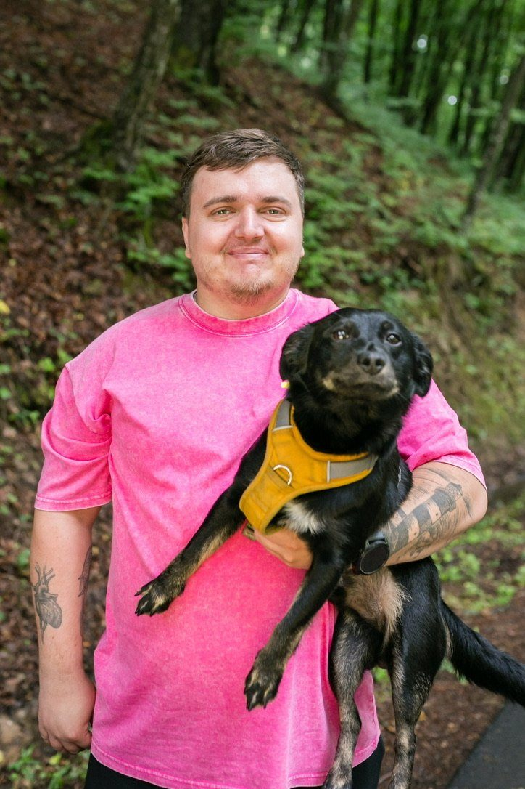
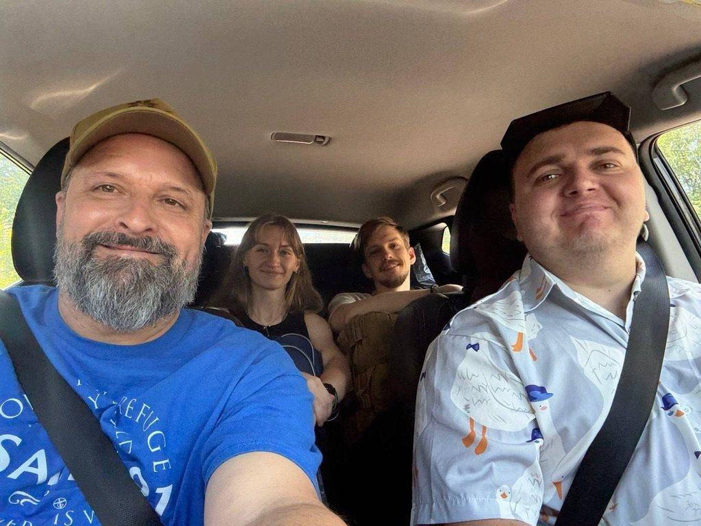
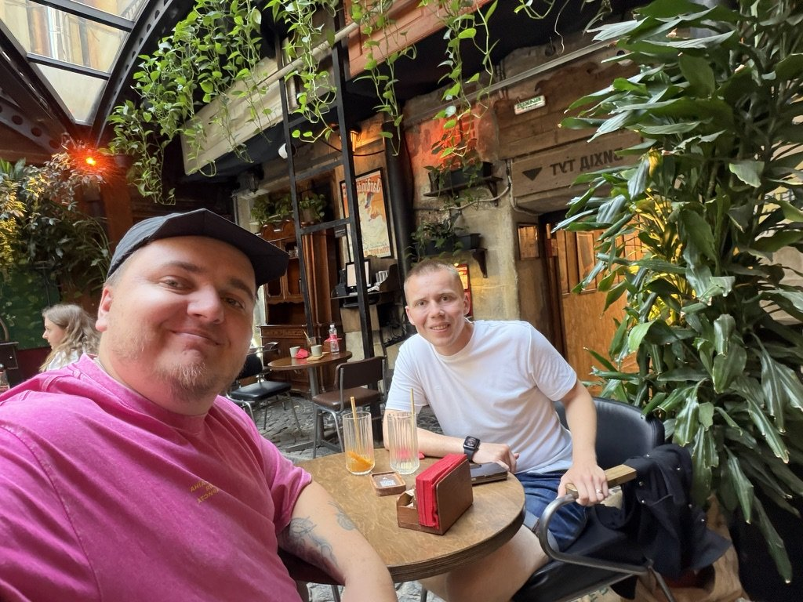
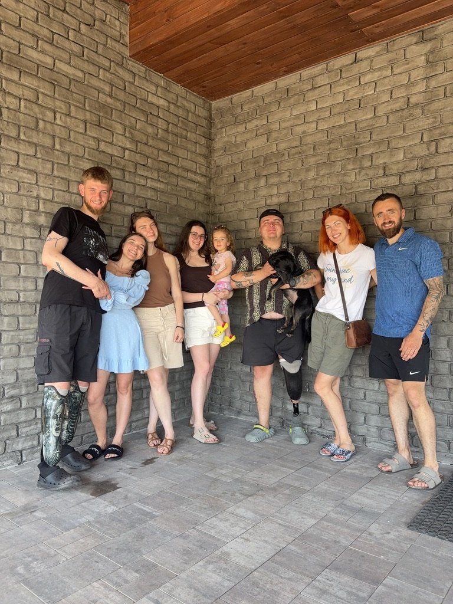
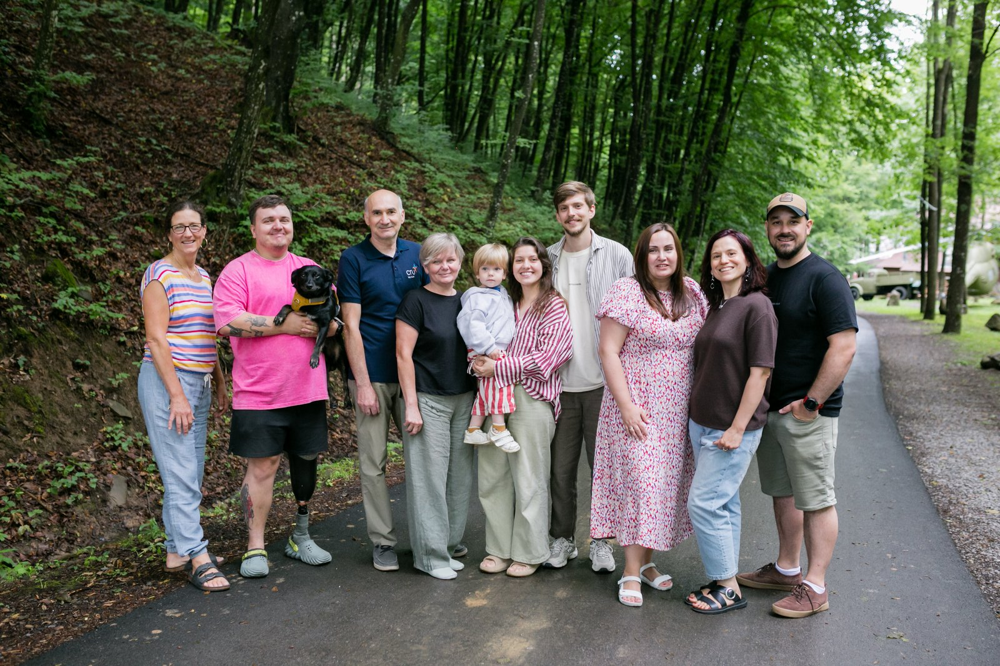
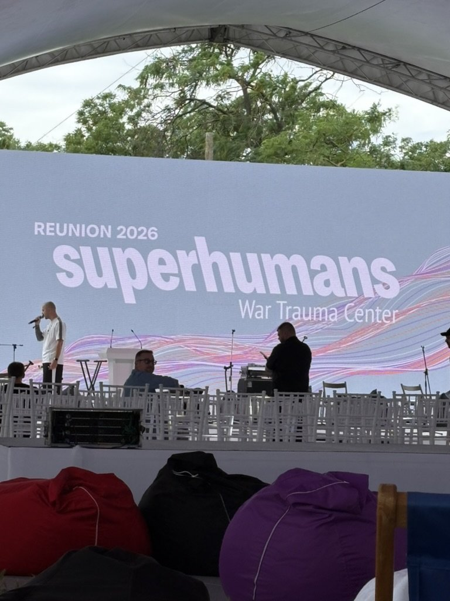
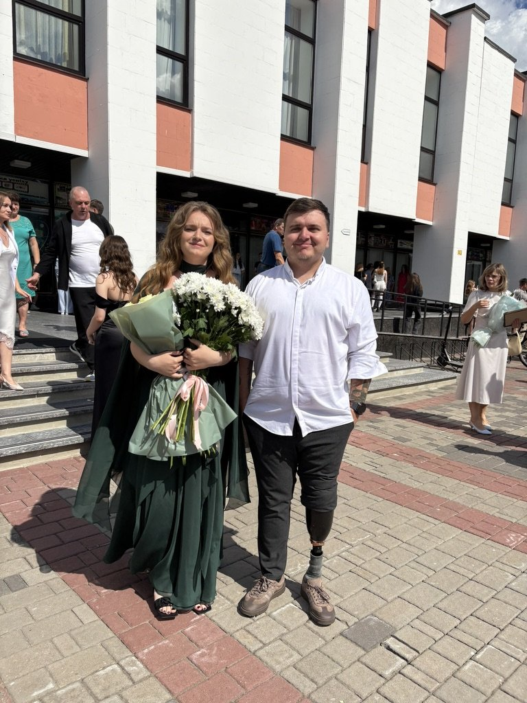
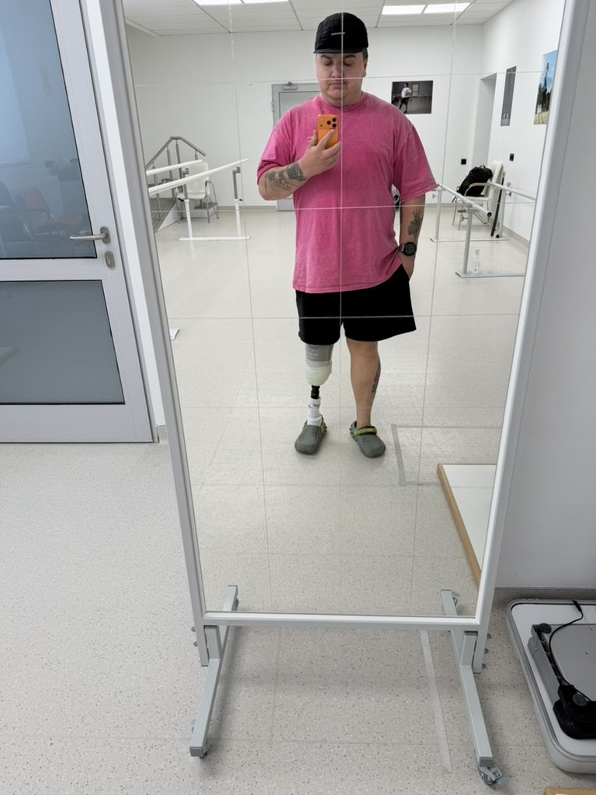

Вітаю, друзі! Місяць, повний зустрічей 👋
Липень видався насиченим на зустрічі, дороги та розмови — від госпітальних майстеркласів до ретритів і конференцій. Хочу поділитися найяскравішим і попросити вас молитися разом зі мною за цих людей.

Мій вірний пес усюди зі мною — на ретритах, у дорозі, на конференціях. Це не завжди ідеально, але це наша реальність, і чимало доброго стається саме по дорозі! 😊
Історія Валерії

«І почув я голос Господа, що промовляв: Кого Я пошлю, і хто піде для Нас? А я відказав: Ось я, пошли мене!»
— Ісая 6:8
З Валерією ми познайомилися на церковному ретриті. Вона щойно долучилася до нашої церкви і була неймовірно вмотивована бути корисною для країни. Побачивши мене, вона одразу почала активно розпитувати, як можна допомагати ветеранам та військовим.
Лєра долучилася до служіння в церкві, і цілий рік ми разом відвідували госпіталі з майстеркласами, щоб хоч трохи розбавити рутину тих, хто там перебуває. Але для неї цього було замало. Вона долучилася до «Госпітальєрів» і рік працювала на кейсеваку — екстреному вивезенні поранених просто з-під обстрілів у безпечніше місце. Ця маленька тендітна дівчина займалася саме цим.
Батьки не в захваті від її рішень, але вона все одно горить бажанням служити. Зараз Валерія долучається до війська офіційно — я сам агітував її йти саме офіційним шляхом, щоб держава могла підтримати, якщо раптом щось станеться.
І ось радісне: вона розповідає, що їй подобається оточення, навчання досить адекватне, а ставлення хороше. Прошу молитися за неї та за її навчання.
Історія Сашка

«І надолужу вам за ті роки, що з'їла була сарана... і не буде народ Мій посоромлений навіки!»
— Йоіл 2:25–26
Повернувшись до Львова, я знову зустрівся з Сашком. Він почав виходити в місто: каже, що тренувань у центрі замало, а просто лежати й сидіти в телефоні — це не для нього. Тож він досліджує місто, гуляє й цікавиться тим, що пропустив за ці чотири роки.
Під час однієї буденної розмови він поділився, наскільки вражений новими речами, що з'явилися (здається, ішлося про штучний інтелект). І тоді я подумав: людина справді втратила чотири роки. Поки його катували, поки життя стояло на паузі в невідомості, у нас усе рухалося, змінювалося, з'являлося нове. Здається, ніби для України час зупинився з початком вторгнення, але, бачачи цих людей із полону, розумієш глибше, якого болю нам завдає країна-агресор.
Та сьогодні в Сашка вже вимальовуються плани на майбутнє: хоче придбати житло, працювати далі, йому запропонували бути в патронатній службі, і він планує переїхати до Києва, щоб бути ближче до дружини. Прошу молитися за його подальшу адаптацію до цивільного життя та за здійснення планів — допомагати оточенню й бути поруч із дружиною.
Літня хроніка

Ми мали міні-відпочинок із київськими ветеранами та їхніми близькими. Бог благословив прекрасним будинком, який церква вирішила безкоштовно надати нам на два дні. Попри те, що не було чіткого плану, які теми обговорювати, ми мали дуже глибокі розмови й рефлексії про життя та військовий досвід. І найголовніше — усі були раді, що нічого не треба організовувати, а можна просто відпочити.

Одразу після ретриту я поїхав на конференцію від місії — і радий, що встиг побувати там разом із псом. Це наша команда: тут бракує лише Жені, але є його дружина. Дуже тішуся, що ми мали можливість зібратися разом, попри всі різкі переїзди й події одна за одною.

Одразу після конференції був реюніон у Superhumans — насправді дуже крута подія. Це місце, де розповідають про оновлення центру, ветеранські бізнеси презентують свою справу, показують адаптивний спорт і різну соціальну підтримку. Саме через таку подію рік тому я познайомився з клубом джиу-джитсу, який відвідую й досі.

Ще хочу поділитися особистою радістю: моя сестра закінчила школу і буде вступати до Львова. Дуже радію за неї й уже кажу, що маю для неї гарну компанію тут! Прошу молитися за її вступ і за те, щоб вдалося познайомити її з кемпусом.
Нові кроки

Оновлював протез — виявляється, це довгий і неприємний процес. Мав уже дві заміни; цього разу наче краще, але буквально вчора знову натер куксу, через що важко ходити. Прошу молитися за адаптацію до нового протеза.
Є й більш творчі та богословські речі (уже без фото 🙂). Я долучився до команди, яка писатиме роботу з Теології інвалідності. Прошу молитви, щоб Бог скеровував у написанні й щоб це в майбутньому допомогло церквам і лідерам краще розуміти людей, які зазнали страждань через війну.
Паралельно я формую сайт для ветеранів із корисною інформацією про весь шлях повернення додому. Я пам'ятаю цей біль і невизначеність, коли потрапляєш до лікарні й не маєш уявлення, що робити далі, а ніхто не підказує наступних кроків. Жнива великі, а сіячів мало — тож вирішив зібрати це в конкретне джерело й поширювати серед знайомих, щоб допомогти іншим пройти цей шлях.
Стати партнером
Ваша підтримка дає змогу бути поруч із цими людьми — на ретритах, у госпіталях, у дорозі. Вона покриває витрати служіння на наступний рік.
Молитовні потреби
- • За Валерію — за навчання та безпеку на офіційній службі.
- • За сестру — за вступ до Львова та знайомство з кемпусом.
- • За Сашка — за адаптацію до цивільного життя, здійснення планів і переїзд до дружини.
- • За мене — за адаптацію до нового протеза.
- • За служіння — за роботу з Теології інвалідності та сайт для ветеранів.
Я щиро вдячний, що ви поруч у цьому служінні. Ваша присутність відчувається навіть на відстані!
«Жниво справді велике, та робітників мало; тож благайте Господа жнива, щоб робітників вислав на жниво Своє»
— Луки 10:2
Олександр Килюшик
З благословенням у Христі
Служіння серед військових · Місія «Україна для Христа»